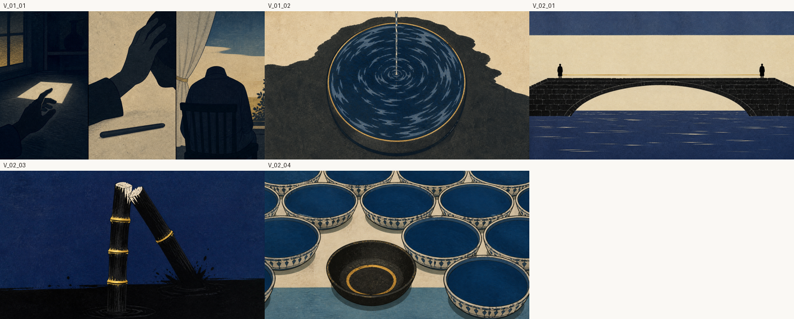

第50話 ／ content/070 ／ 画像の最終判断
金をどこまで使うか、決めてください。
画像の独立採点が88点（合格90）で止まっています。あと2点の中身が、あなたが承認した2つの決定が食い違っている箇所なので、私では決められません。
- 絵コンテ（8/8にあなたが承認）は、幕1-2で金を「限界線」の意味で使う設計になっています。
- H66というルール（7/31にあなたが承認）は「金＝分かる瞬間の色。幕1-2は藍と墨のみ」と決めています。
- 採点者は毎回この矛盾を減点します。どちらを優先するかだけ教えてください。
問題の5枚

V_01_01＝窓の光と草／V_01_02＝器の縁／V_02_01＝橋を横切る一本／V_02_03＝竹の節／V_02_04＝水位の輪。いずれも金が視線の一等地にあります。同じ幕2でも V_02_02（夜の机）は金ゼロです。
私の見立て：この回は「金＝限界線・水位」で一本通っているので、絵としては今のほうが強いと思います。ただしH66は「冒頭で金を使うと、種明かしで金が出たときの効きが落ちる」という狙いのルールで、これも筋が通っています。効果が測られていない仮説どうしの衝突なので、あなたの好みで決めてよい種類の話です。
採点がどう動いたか（隠さず出します）
| 周 | 点 | そのとき指摘された主なもの |
|---|
| 1 | 93 | （合格。ただしこの後に絵の割当ミスが発覚して作り直し） |
| 2 | 89 | 升の目盛りが読めない／橋の人影4人／器が事故に見える／階段七段 |
| 3 | 84 | 紙が二枚に見える／升がCAD風／金の使い方／挿入図の色違い |
| 4 | 86 | 同上（別の採点者・指摘が一部入れ替わる） |
| 5 | 88 | 3人が繰り返し指摘した3枚は解決。残るのは金の規律・空の描写・モーション適性 |
採点者は毎回まっさらな別の頭です。点が上下するのは指摘の重みづけが人によって違うためで、致命傷（顔・作品の意匠・文字）は全周でゼロでした。
いま直っているもの
- 物証カット：閉じた門＋塀に掛けた板絵（前カットの戸を同じ配色で縮小）。採点者が「この回の物証は成功」と明記。
- 六爻図：節＝110010、四爻が金でデータベースと一致。
- 識別監査：27枚すべて「作品・キャラ不明」＋安全弁4項目すべてfalse。途中で見つけた「北斎の波の引き写し」「正の字に読める棒の列」「六爻図に読める横線の積層」「アルファベットに読める切り欠き」は全部つぶしました。
決めてください
A — 今の絵のまま進める（絵コンテ優先）。88点のままレンダして通し視聴へ。金の規律は今回だけ例外にして記録に残します。最短。今日中に通し視聴まで行けます。
B — 幕1-2の金を消す（H66優先）。上の5枚を藍と墨で作り直し、ついでに「空を描かない」に反している3枚も直します。画像7枚の作り直し＋レンダやり直しで、半日ほど戻ります。90点を超える見込みが高いです。
C — 一部だけ消す（どの絵の金を残したいか言ってください。例：「橋の一本だけ残す」）
どれを選んでも、公開は 2026-08-21 04:00 JST の予約で、公開ボタンはあなたが押します。